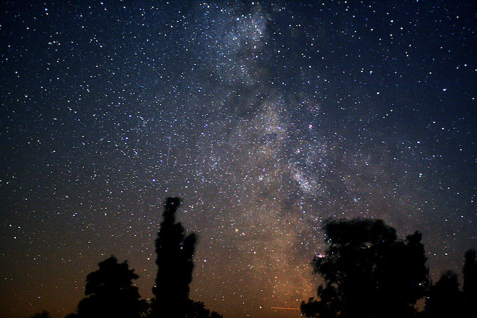
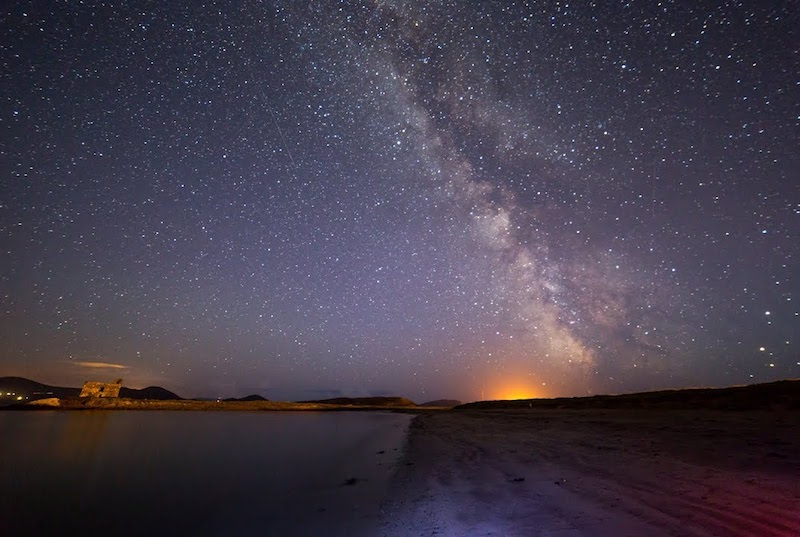
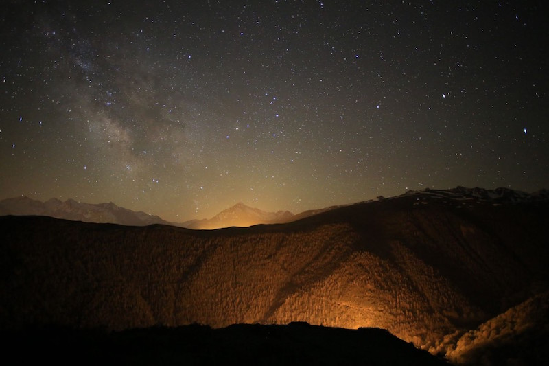
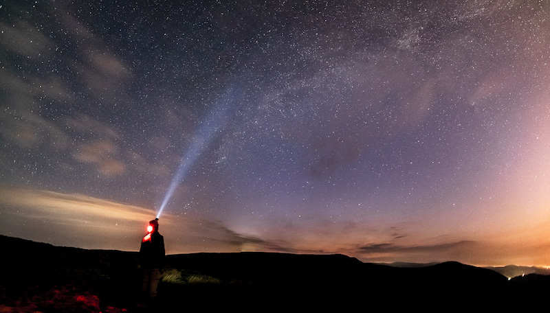
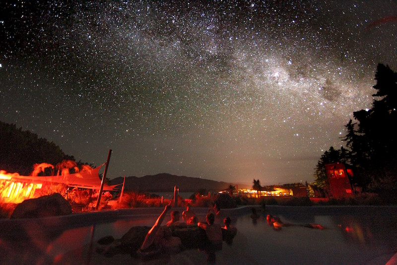
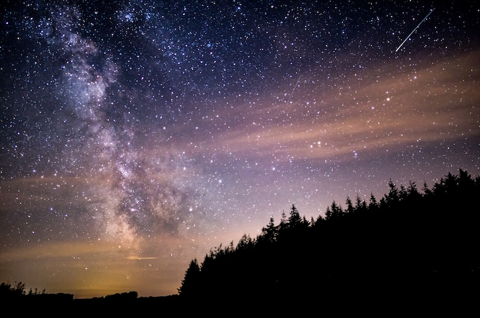

Знаки зодиака
Расположившийся примерно в ста километрах от Берлина, парк Вестхавелланд (Westhavelland Nature Park) в Германии так и называют — Звездный Парк. Считается, что он особенно хорош для наблюдения за звездами осенью. Небо чистое, безоблачное, кругом слышится пение перелетных птиц, а погода отлично подходит для ночных прогулок. Директор местного планетария, Андреа Хенел, также является членом ассоциации IDA, она сама нередко припадает к телескопу вместе с туристами. Андреа приложила немало усилий, чтобы небо над Вестхавелландом очистили от отблесков искусственного освещения, а сам парк включили в список IDA. Хенел поддерживает мнение, что осень — лучшее время года, чтобы проникнуться атмосферой дикой природы и романтикой звезд. Профессиональные астрономы приезжают в заповедник в период с середины мая до конца июля. В это время небо над Вестхавелландом темное и чистое. В новолуние за звездами наблюдают с полуночи до рассвета. Есть шанс увидеть зодиакальный свет и феномен противосияния.  2. Керри, Ирландия
Национальный парк Темного Неба в Керри (Kerry International Dark Sky Reserve) появился сравнительно недавно. Он занимает площадь свыше семисот квадратных километров на полуострове Ивер. От светового загрязнения его защищает Атлантический океан и горный массив. Ночью здесь можно увидеть Млечный Путь, крупные звездные скопления, туманности и даже метеоры. В ясные ночи видно Галактику Андромеду, распложенную за 2,5 млн световых лет от Земли. Андромеда — ближайший сосед Млечного Пути. Увидеть сразу обе галактики — редкость. Еще одно преимущество Национального парка в Керри — наличие налаженной инфраструктуры. Здесь проживает около четырех тысяч человек, поэтому до любого уголка заповедника легко добраться на машине. Везде проложены дороги, есть магазины и отели. Карта самых звездных мест предоставляется официальным сайтом парка.
 3. Пик-дю-Миди, Пиренеи, ФранцияВо французский Пиренеях, неподалеку от границы Италии, раскинулся масштабный природный парк Пик-дю-Миди (Pic du Midi International Dark Sky Reserve). Его главная достопримечательность — обсерватория на вершине горы Миди- де-Бигорр (2877 м). Более ста тысяч туристов ежегодно посещают заповедник и обсерваторию, чтобы понаблюдать за чистейшим ночным небом. Сюда не достает ни световое загрязнение, ни дымные облака или вредные выбросы заводов. Парк занимает около трех тысяч квадратных километров, проходит по горной гряде и включает в себя Пиренеи-Пердю — известняковую гору, занесенную в список Всемирного наследия ЮНЕСКО. Самое популярное место для наблюдения за звездами — обсерватория. Она была построена в 1881 году, несколько раз расширена и отреставрирована. Именно в этой обсерватории провелось первое в истории дневное наблюдение покрытия звезд астероидом. Внутри есть профессиональное оборудование: рефракторы, телескопы, коронографы. А еще один из самых «высоких» в мире музеев с экспонатами по истории астрономии. С площадки обсерватории видно Млечный Путь, множество созвездий, зодиакальный свет. Понаблюдать за звездами можно самостоятельно или в составе экскурсий. Самая популярная экскурсионная программа называется «Night at the Summit»: по ее завершению туристам предлагается взглянуть на знаменитый двухметровый телескоп Бернара Лиота — самый большой телескоп во Франции. И раз обсерватория Пик-дю-Миди находится на верхушке заснеженной горы, любование звездами можно сочетать с зимними видами спорта. К обсерватории ведет канатная дорога, и некоторые спортсмены используют ее для спуска на лыжах и сноубордах. Чтобы привлечь туристов, управление обсерваторией позволяет астрономам-экстремалам бесплатно кататься по склонам Миди-де-Бигорр.
 4. Брекон-Биконс, ВеликобританияНациональный парк Брекон-Биконс в южном Уэльсе (Brecon Beacons National Park) по праву носит статус заповедника темного неба. Здесь можно увидеть Марс и Юпитер невооруженным глазом, просто гуляя по прериям в темное время суток. В телескоп отлично просматриваются Галилеевы спутники: Ио, Европа, Ганимеда и Каллисто. Галилео открыл их в 1609 году с помощью своего первого телескопа. Лучше всего звезды видны с верхушки Сахарной Горы (335 метров над уровнем моря), куда легко добраться на машине или пешком по трассе. С вершины открывается потрясающий вид на долину, Черные Горы и лесистые холмы. На горизонте просматривается силуэт древнего монастыря Ллантони. Часть его руин была реконструирована, а часть переделана под тематический паб и туристическую гостиницу.
 5. Аораки Маккензи, Новая ЗеландияНациональный парк Аораки Маккензи (Aoraki Mackenzie International Dark Sky Reserve) по праву считается одним из лучших мест для наблюдения за ночным небом, в особенности, за астрономическими объектами южного полушария. Например, тут видно живописнейшее Полярное сияние (оно же Aurora Australis, характерное для юга), созвездие Южный Крест и Сигму Октанту — ближайшую к южному полюсу звезду, которую легко найти на небосклоне даже невооруженным глазом. Национальный парк занимает внушительную площадь: почти четыре с половиной тысячи квадратных километров. Он находится на Южном острове Новой Зеландии, в районе местных Альп. Среди популярных у астрономов маршрутов — озеро Текапо и подъем на гору Кука, откуда открываются зрелищные виды не только на небосклон, а еще и на окружающую природу. Лучше всего небо просматривается в безлунные ночи. Когда полная луна сходит на нет, небо становится ярким и «прозрачным» почти как днем. В таких условиях выпадает возможность полюбоваться на Млечный Путь, простирающийся с одного конца горизонта до другого.
 6. Эксмур, ВеликобританияПервым в Европе заповедником темного неба стал Национальный парк Эксмур (Exmoor National Park), получив свое почетное звание еще в 2011 году. В ясные ночи здесь можно увидеть и идентифицировать не меньше трех тысяч звезд! Некоторые астрономы всерьез лелеют мечту высмотреть тут какое- нибудь новое небесное тело — настолько звездным выглядит небо. Может быть, и впрямь повезет? Лучшее время для поездки в Эксмур — с начала марта до конца апреля. В этот период небо над Великобританией темное и прозрачное. В конце лета есть шанс застать метеоры — сгорание разных космических объектов, сопровождающихся яркими разноцветными вспышками. Отличная обзорная точка — озеро Уимблболл. Оно расположено на возвышенности: ничего не закрывает вид на небо, жилые районы и поселения далеко — никакого смога и светового загрязнения. Кругом лишь первозданная природа, пение птиц и шум деревьев — красота!
